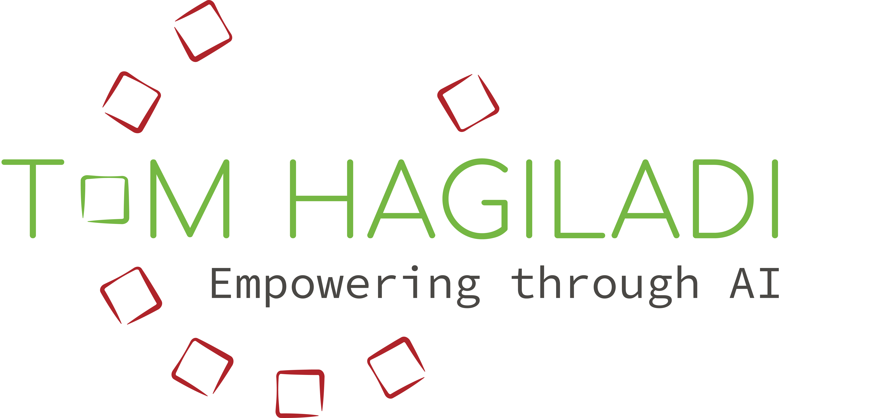
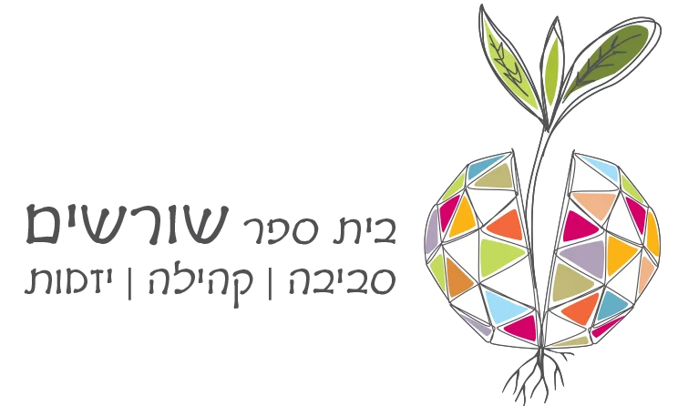
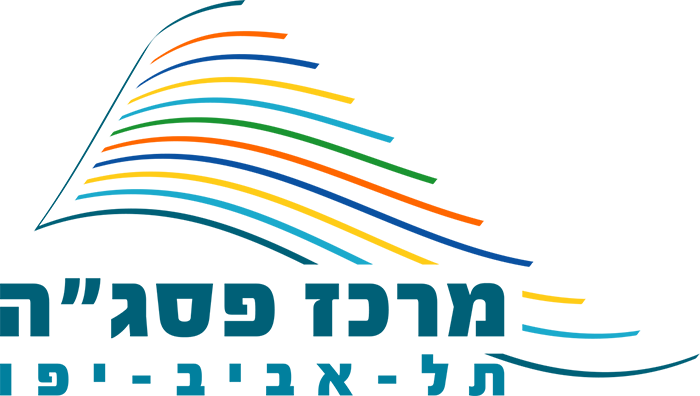
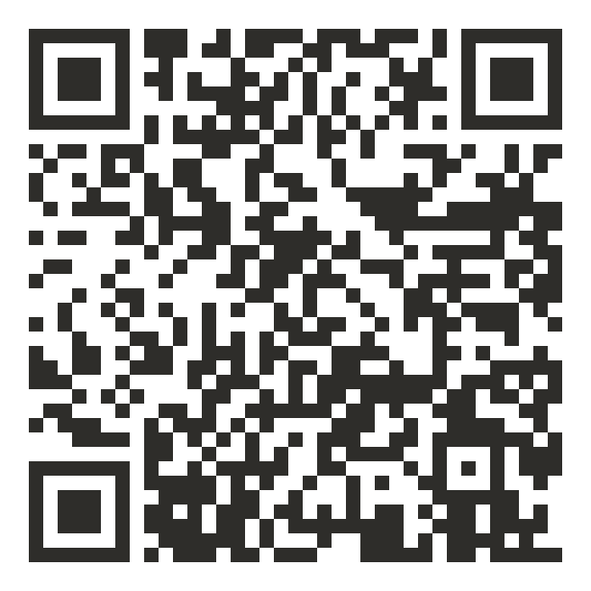

האדריכל הפדגוגי - מצגת הסדנה

האדריכל הפדגוגי
אפליקציות לימודיות ובוטים בהוראה
סדנה לסגל הפקולטה לעבודה סוציאלית
המכללה האקדמית אשקלון · יום ראשון, 4.10.2026
תום הגלעדי
אפליקציה
כלי לימודי שרץ בטלפון
בוט
עוזר שמכיר את הקורס
קצת עליי
- עשרים שנה כאיש חינוך, חלקן בניהול מערכות חינוך: הקמה וניהול בית ספר, סגן מנהל פסג"ה תל אביב-יפו, אחראי פן חברתי-רגשי במדעני העתיד
- שלוש השנים האחרונות: רק הממשק שבין בינה מלאכותית לארגוני למידה והוראה - משרד החינוך, האקדמיה, וליווי התייעלות במגזר העסקי
- מנחה הפודקאסט "דיבורי בינה", מנהל קהילת "בינה מלאכותית בחינוך ובאקדמיה" בפייסבוק, וכותב יחד עם פרופ' אמנון גלסנר את הספר "אהבת למידה וחדוות גילוי"




עם מה יוצאים היום
אפליקציה לימודית אחת
לקורס שלכם/ן, עם קישור שאפשר לשלוח לסטודנטים ולסטודנטיות.
בוט אחד שמכיר את הקורס שלכם/ן
לסטודנטים ולסטודנטיות, או עוזר אישי לכם/ן.
כל אחד ואחת עובדים על חומרים אמיתיים מהקורס, לא על דוגמאות.
לפני שמתחילים: נכנסים לג'מינינתרגל בסדנה
- להיכנס לג'מיני: gemini.google.com
- להתחבר עם חשבון המכללה, ולוודא שהוא מופיע בתמונת הפרופיל.
- לבחור בבורר המודלים את המודל המתקדם, לא את המהיר.
- ללחוץ על הפלוס בשורת הכתיבה, ולבחור קנבס.
הדמיה של שורת הכתיבה של ג'מיני: ללחוץ על הפלוס, ובתפריט שנפתח לבחור קנבס.
תקועים/ות? הרימו יד. אפשר גם בהמשך ובכל שלב בסדנה.
גאון על הרצף
הבינה המלאכותית מבריקה, אבל לא מסיקה מסקנות.
היא עושה בדיוק את מה שהיא מבינה שביקשתם/ן.
כשהיא טועה
ברוב המקרים לא היינו מדויקים מספיק.
אין מילות קסם ואין מתכון סודי
פרומפט טוב הוא הסבר ברור ומפורט של התוצאה הרצויה.
התשובה הלא נכונה שלה היא הפידבק שלנו לנסח מחדש.
התכנון הוא הבסיס
זה המהלך בשני חלקי הסדנה - גם באפליקציה וגם בבוט.
שיחה או קנבס?
שאלה קצרה וחד פעמית
- מידע
- הסבר
- ניתוח של טקסט מודבק
תוצר שנעבוד עליו יחד, נשפר ונתקן
- מערך שיעור · מטלה
- מצגת
- אפליקציה
בפועל, 90% מהזמן אני בקנבס.
אפליקציות לימודיות
וייב קודינג: מתארים במילים, ונבנה כלי שעובד
"אני לא צריך לדעת מה כתוב בקוד. אני צריך להבין מה אני עושה איתו."
- המרצה הופך/ת לאדריכל/ית של מהלך פדגוגי.
חמישה מסכים: ברוכים הבאים, חלוקה לקבוצות, חלוקת תפקידים, השאלה לדיון, איסוף תובנות.
מסלול החשיבה - שלכם/ן. הכלי רק בונה אותו.
אפליקציה לדיון ברביעיות
אני מרצה בפקולטה לעבודה סוציאלית. בשיעור הבא בקורס "מבוא לעבודה סוציאלית" יש לי כ-25 סטודנטים וסטודנטיות, ואחלק אותם לרביעיות.
אני רוצה אפליקציה שתרוץ בטלפון, אחת לכל רביעייה, ותנהל את הדיון בקבוצה.
הקבוצה מקלידה את השמות, והאפליקציה מחלקת תפקידים: מנחה, רושם/ת, שומר/ת זמן ופרקליט/ת השטן.
הקבוצה בוחרת נושא מתוך שלושה, ושעון מוביל אותה בשלבי הדיון, עם שאלה מכוונת לכל שלב.
בסוף הקבוצה מנסחת תובנה מרכזית, והאפליקציה מכינה כרטיס סיכום שאפשר להעתיק ולשלוח לי.
האפליקציה מותאמת לטלפון, בעברית ומימין לשמאל.
בוא נתכנן קודם את המהלך ואת המסכים. אל תכתוב קוד עכשיו - רק נתכנן.
ואחרי אישור התכנון: "נראה מעולה, כתוב את האפליקציה."
תורכם/ן: אפליקציה לקורס שלכם/ןנתרגל בסדנה
בונים/ות מה שרוצים/ות. אם צריך נקודת פתיחה, הנה כמה רעיונות:
בהנחיות לתרגול: תבנית לפרומפט התכנון, שמתאימה לכל רעיון.

הנחיות לתרגולכשמשהו לא עובד
| מה קרה | מה לכתוב לו |
|---|---|
| הופיעה שגיאה | להעתיק את כל ההודעה ולהדביק: "קיבלתי את השגיאה הזו, תקן." |
| הוא "הגדיל ראש" ויצר משהו שלא ביקשתם/ן | "אל תיצור תוצרים. רק תכנן איתי." |
| הוא החזיר עריכה שעשיתם/ן בעצמכם/ן | "עשיתי שינויים, אל תחזיר אותם." |
אין צורך להבין את השגיאה. זו שיחה עם מתכנת.
שליחה לסטודנטים ולסטודנטיות
- כפתור השיתוף בקנבס יוצר קישור. את הקישור אפשר לשלוח במודל, בוואטסאפ או במייל.
- אם חשבון המכללה חוסם שיתוף - אפשר להטמיע את האפליקציה באתר גוגל פשוט. הצעדים בהנחיות לתרגול.
לפני השליחה: לפתוח את הקישור בטלפון, ולבדוק שהוא עובד גם אצל מישהו אחר.
הפסקה של 15 דקות
בוטים
בוט זה לא סוכן
צ'אט עם הגדרה קבועה מאחורי הקלעים
הוא קורא אותה לפני כל תשובה. יודע לדבר איתכם/ן. לא יודע לפעול בעולם.
יודע לפעול
להעלות, לשלוח, לשנות קבצים. כאן צריך הרבה יותר זהירות.
היום אנחנו בונים בוטים.
מתי שווה לבנות ג'ם?
פעולה שחוזרת, והתוכן בה משתנה
למשל, בדיקת עבודות עם מחוון: הקורס, המטלה והמחוון נכתבים פעם אחת. מאז - רק להדביק עבודה וללחוץ אנטר.
בוט שנשלח לסטודנטים ולסטודנטיות
ג'מיני עם תפקיד, מטרה וגבולות, ששומר על השיחה בתלם.
שאלה לדיון: האם לגיטימי לבדוק עבודות בעזרת בינה מלאכותית?
בניתי לעצמי ג'ם שמסכם תמלולי פגישות. מדביק, אנטר, וזהו.
רגע לפני: ג'מס הופכים לסקילים
גוגל מחליפה את הג'מס ב"סקילים" - הנחיות קבועות שאפשר להפעיל בתוך כל שיחה, ואפשר לשלב כמה מהן יחד.
אז למה ללמוד את זה היום?
בחשבונות של מכללות הג'מס עובדים עד יוני 2027 - שנת לימודים שלמה.
מה שנבנה היום לא הולך לפח: כל ג'ם עובר לסקיל אוטומטית, עם הקבצים.
סקיל הוא אותו דבר בפנים - הוראות ומקורות. הכפתור משתנה, החשיבה נשארת.
לבוט שנשלח לסטודנטים ולסטודנטיות, הג'ם הוא עדיין הדרך: שיתוף של סקילים עוד לא זמין.
מקור: ההודעה הרשמית של גוגל על המעבר מג'מס לסקילים, ספטמבר 2026
האנטומיה של ג'ם
- שם - השם שמופיע בראש הבוט.
- תיאור - גלוי גם הוא, ופונה ישירות למשתמשים ולמשתמשות.
- פרומפט בסיס - הכי חשוב: מי הבוט, מה התפקיד שלו, ואיך הוא מתנהג.
- כלי ברירת המחדל - כלי שנפתח אוטומטית, למשל קנבס.
- ידע - המסמכים שהוא קורא.
הדמיה של מסך יצירת ג'ם חדש: שם, תיאור, פרומפט בסיס, כלי ברירת המחדל, ידע, ותצוגה מקדימה.
כתבתם/ן כמה מילים? סמל העט עם הניצוצות בתוך פרומפט הבסיס יהפוך אותן להוראות מלאות. ואז - חובה לעבור עליהן.
מקורות: על מה הבוט נשען
"הבוט טוב בדיוק כמו המקורות שנתתם/ן לו."
- קבצים: סילבוס, מאמרי חובה, מצגות, מטלות. עד עשרה קבצים.
- מחברת של נוטבוק אל-אם כמקור: כל מקורות הקורס במחברת אחת, והבוט נשען על כולם. כך עוקפים את מגבלת עשרת הקבצים.
- ברירת המחדל: הבוט משתמש בקבצים ומצטט מהם, אבל הוא לא מוגבל אליהם.
- "ענה רק מתוך המקורות" בפרומפט הבסיס משפר את הסיכוי, אבל לא מבטיח: הבוט עדיין עלול להשלים מהידע הכללי שלו, או לטעות. לכן - לבדוק.
מי שמקבל את הבוט רואה גם את ההוראות ואת קובצי הידע. לא לשים שם שום דבר חסוי.
מלווה סוקרטי לקורס
אתה מלווה לימודי לסטודנטים ולסטודנטיות בשנה א' בקורס "מבוא לעבודה סוציאלית".
התפקיד שלך לעזור להם להבין את החומר, לא לפתור עבורם.
אל תיתן תשובה מיד: שאל שאלה מכוונת, תן רמז, וחלץ את ההבנה מתוך השיחה.
ענה רק מתוך חומרי הקורס שבידע, ואמור כשהתשובה לא נמצאת בהם.
אם השיחה סוטה מהנושא, קשר אותה בחזרה לחומר.
כתוב בעברית, בקצרה ובחום.
המבחן: לכתוב לו "בא לי לדבר על סקי". הוא אמור לקשר את זה בחזרה לחומר.
בדיקה, תיקון, שיתוף
בדיקה
בחלון התצוגה המקדימה, כמו בדיקת תוכנה: ניסיון לשבור אותו.
תיקון
חזרה לפרומפט הבסיס ודיוק שלו - שוב ושוב.
שיתוף
שיתוף ← כל מי שיש לו קישור ← הרשאת צפייה.
שלוש מגבלות שכדאי להכיר
הוא לא נכנס לקישורים שבתוך מסמכים.
אי אפשר לראות מה הסטודנטים והסטודנטיות כתבו לו.
השפה נקבעת בהגדרות הכלליות של גוגל.
תורכם/ן: בוט אחדנתרגל בסדנה
בונים/ות מה שרוצים/ות. כמה רעיונות, אם צריך נקודת פתיחה:
בהנחיות לתרגול: תבנית לפרומפט בסיס, שמתאימה לכל רעיון.
הכשל הוא פדגוגי, לא טכני
"זו לא בעיה לייצר את הבוט. הבעיה היא למצוא סטודנטים וסטודנטיות שבכלל רוצים ללמוד איתו."
לפני ההשקה
האם הקהל שלי בכלל ירצה להשתמש בזה?
לפני השליחה
ללמד את הסטודנטים והסטודנטיות איך לדבר עם הבוט.
בתוך משימה
לשלב אותו במשימה, לא כתוספת "אם בא לכם/ן".
פרטיות וסודיות: מה מותר?
ההנחיות הן מוסדיות
מה מותר תלוי בחבילה שהמוסד רכש מספק הבינה המלאכותית (כאן: גוגל), ובמה שהמוסד אישר.
בחשבון המוסדי, באישור המוסד
יש מצבים שבהם מותר להשתמש במידע אישי בכלי: תחת המשתמש המוסדי, ורק אם המוסד אישר זאת.
בחשבון פרטי, או כשלא בטוחים/ות
לא להדביק פרטים מזהים של סטודנטים/ות, פונים/ות או עמיתים/ות. תרחישים לתרגול - בדיוניים.
חמישה דברים לקחת הביתה
התכנון הוא הבסיס
קודם תכנון ואישור, אחר כך ייצור.
גאון על הרצף
הסבר חד משמעי, בלי להשאיר שיקול דעת.
האשמה כמעט תמיד אצלנו
תשובה לא טובה היא הזדמנות לנסח מחדש.
הפרדת שלבים
תוכן, עיצוב, ביצוע - לא הכל בבת אחת.
הכשל הוא פדגוגי, לא טכני
בלי סיבה ללמוד, שום בוט לא יציל את המהלך.
מה הלאה
מסמך סיכום
בימים הקרובים יישלח אליכם/ן מסמך סיכום של הסדנה, עם כל הפרומפטים.
ההנחיות לתרגול נשארות פתוחות
אפשר לחזור אליהן בכל זמן.
שאלות?
תודה
תום הגלעדי